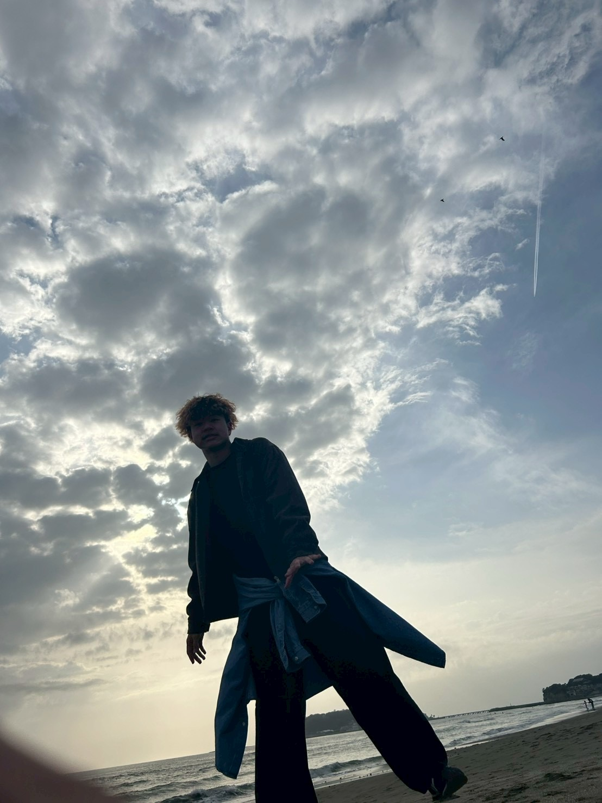
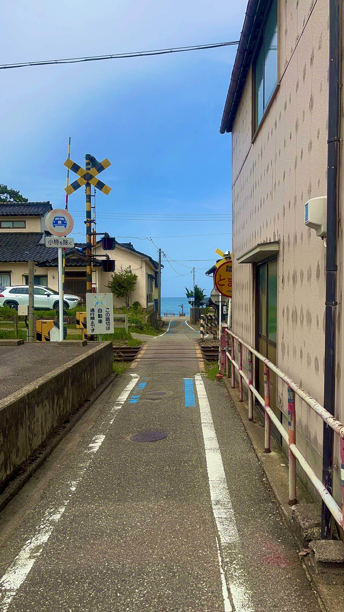
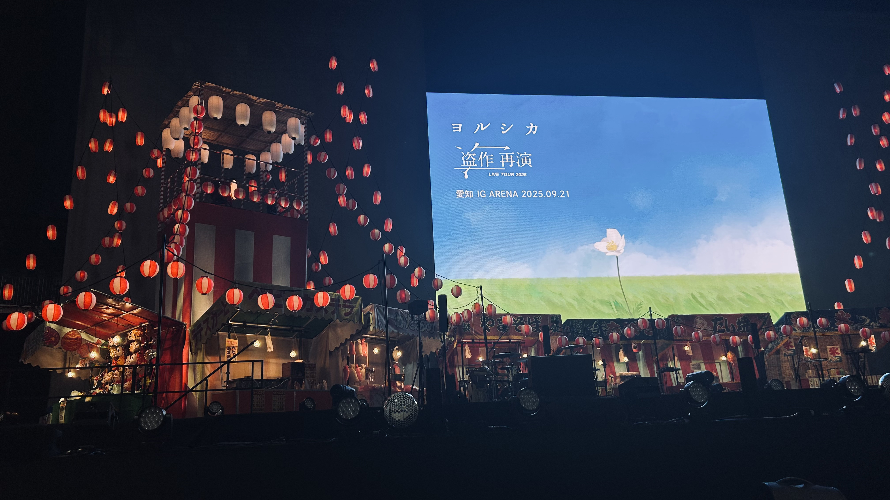

こんにちは！私は、桃井優です。麗澤大学の工学部の2年生です。趣味は、音楽を聴いたり歌ったりすることです。 好きなアーティストは、ヨルシカです。ヨルシカのライブには何回も行っていて、行くたびに感動しています。特に好きな曲は、「ただ君に晴れ」です。

これは、ただ君に晴れのミュージックビデオのワンシーンに出てくる場所です。雨晴海岸というところで、富山県にあります。とてもきれいな場所なので、ぜひ行ってみてください。 こんな感じで、聖地巡礼などもしていて、自分が行ったことある場所を地図にしたりもしてます。

これは、去年の名古屋でやったヨルシカのライブの写真です。アリーナの最前列で、すごく近くで見れてとても幸せでした。 今年に入ってからは、旅に出るのがはまっていて、春休みは北海道に行きました。北海道はご飯がおいしいのはもちろん、景色がきれいでとてもいい思い出になりました。 最近は、AIと一緒にごみ回収についてのアプリを作ってみていて、まだまだプログラミングについては初心者ですがものづくりの楽しさを感じています。下のリンクから、アプリのプロトタイプを見れるので、ぜひ見てみてください。
ごみのアプリのプロトタイプ